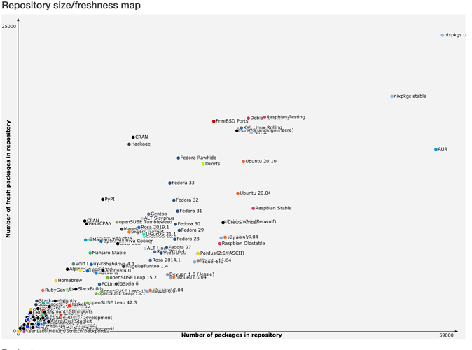

A NixOS egy Linux-alapú OS, és az MIT licenszet használja.
A NixOS-t 2006-ban alapította Eelco Dolstra.
A NixOS a Nix funkcionális nyelvre alapul. Célja egy megbízható, "törhetetlen," és bárhol reprodukálható operációs rendszer.
A Nix funkcionális nyelv egy erős, a json vagy yaml-hoz hasonló, deklaratív nyelv. Itt lehet definiálni, mi milyen legyen.
A NixOS symlink-ek segítségével köti ossze a generációkat. Így ha egy új szoftvert beraksz, csak az új kap cserét, a régiek a symlinkek segítségével megmaradnak.
A /etc/nixos mappában vár a configuration.nix, ami a géped alap configja. Ezt a sudo nixos-rebuild switch parancs tudja leépíteni, és egy generációba helyezni. Minden generációra vissza tudsz menni (ha csak nem törlöd), és mivel a rendszer immutable, nehéz korruptálni.
A NixOS release-k mindig a latest LTS (Hosszú távon támogatott) Linux kernelt kapják meg. A NixOS sok mindenben eltér egy klasszikus Linux-disztrótól. jelenlegi latest a 26.05, nemsokára érkezik a 26.11.
A NixOS a Nixpkgs (unstable) csomagkezelőt használja, ami a legnagyobb package repositoryt tárolja Linux-disztrók közül (nagyobb, mint az AUR!). A Nixpkgs (stable) nem sokkal van lemaradva, cserébe nem omlik össze.

{ config, pkgs, ... }:
{
imports =
[ # Ide kell megadni a hardver-specifikus konfigurációs fájlt
./hardware-configuration.nix
];
# --- Rendszerindító (Bootloader) beállítása ---
boot.loader.systemd-boot.enable = true;
boot.loader.efi.canTouchEfiVariables = true;
# --- Hálózat beállítása ---
networking.hostName = "nixos"; # A számítógép neve
networking.networkmanager.enable = true; # Hálózatkezelő engedélyezése
# --- Területi beállítások (Magyar) ---
time.timeZone = "Europe/Budapest";
i18n.defaultLocale = "hu_HU.UTF-8";
# Magyar billentyűzetkiosztás konzolra
console.keyMap = "hu";
# --- Grafikus illesztőprogram (GPU Driver) ---
# Alapértelmezésben a nyílt forráskódú illesztőprogramok aktívak.
# Ha NVIDIA kártyád van, vedd ki a kommentet az alábbi sorokból:
# services.xserver.videoDrivers = [ "nvidia" ];
# hardware.opengl.enable = true; # Újabb NixOS verziókban: hardware.graphics.enable = true;
# --- Asztali környezet (opcionális, pl. GNOME) ---
services.xserver.enable = true;
services.xserver.desktopManager.gnome.enable = true;
services.xserver.displayManager.gdm.enable = true;
# --- Felhasználói fiók ---
users.users.felhasznalo = {
isNormalUser = true;
extraGroups = [ "wheel" "networkmanager" ]; # "wheel" kell a sudo-hoz
initialPassword = "jelszo"; # Első indítás után érdemes megváltoztatni a 'passwd' paranccsal
};
# --- Alapcsomagok telepítése ---
# Itt adhatsz hozzá tetszőleges programokat a rendszerhez
environment.systemPackages = with pkgs; [
git # Verziókezelő
wget # Letöltőeszköz
curl # HTTP kliens
firefox # Webböngésző
htab # (vagy htop) Rendszerfigyelő eszköz
];
# Ne módosítsd ezt az értéket anélkül, hogy elolvasnád a dokumentációt.
system.stateVersion = "26.05"; # A NixOS verziója, amellyel a rendszer készült
}
És egy flake.
{
description = "Egyszerű Nix flake Nixcorddal";
# Meghatározzuk a szükséges csatornákat/forrásokat (itt a legfrissebb unstable csatornát használjuk)
inputs = {
nixpkgs.url = "github:nixos/nixpkgs/nixos-unstable";
# Itt adjuk hozzá a Nixcordot a flake-ekhez
nixcord.url = "github:kayla-nix/nixcord";
};
# Létrehozzuk a kimeneteket, amelyeket a Nix felhasználhat
outputs = { self, nixpkgs, nixcord, ... }@inputs: {
# Példa egy NixOS rendszerkonfigurációra
nixosConfigurations.peldaGep = nixpkgs.lib.nixosSystem {
system = "x86_64-linux";
modules = [
# Itt húzzuk be a fő rendszerkonfigurációt (pl. configuration.nix)
./configuration.nix
# Itt adjuk hozzá a Nixcord modult a rendszerhez
nixcord.nixosModules.nixcord
];
};
};
}
A flakek segítségével tudsz importálni specifikus repokat, amik nem elérhetőek a nixpkgs-en. Hasznos sok unofficial programra.